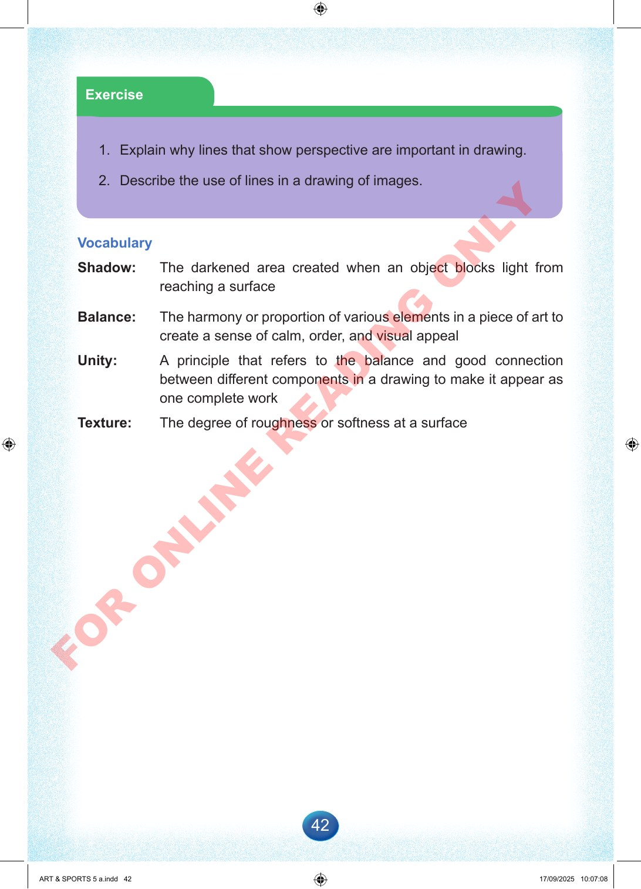

42
Exercise
1.
Explain
why
lines
that
show
perspective
are
important
in
drawing.
2.
Describe
the
use
of
lines
in
a
drawing
of
images.
Vocabulary
Shadow:
The
darkened
area
created
when
an
object
blocks
light
from
reaching
a
surface
Balance:
The
harmony
or
proportion
of
various
elements
in
a
piece
of
art
to
create
a
sense
of
calm,
order,
and
visual
appeal
Unity:
A
principle
that
refers
to
the
balance
and
good
connection
between
different
components
in
a
drawing
to
make
it
appear
as
one
complete
work
Texture:
The
degree
of
roughness
or
softness
at
a
surface
ART
&
SPORTS
5
a.indd
42
ART
&
SPORTS
5
a.indd
42
17/09/2025
10:07:08
17/09/2025
10:07:08
F
O
R
O
N
L
I
N
E
R
E
A
D
I
N
G
O
N
L
Y